Síntese por instituição
INPE/INMET · Chuva observada e prevista
Até 24/11, os maiores excessos de chuva se concentravam em setores do centro-sul da região, com distribuição irregular nas cabeceiras. O BAM prevê chuva acima da média em grande parte da bacia entre 25/11 e 01/12. De 02 a 08/12, esse sinal se concentra mais no sudoeste. Mapa observado · Previsão semanal
CEMADEN · Aportes previstos para o rio Grande
A precipitação na bacia atingiu 112% da referência no parcial de novembro. Para os 14 dias a partir de 26/11, o GEFS projeta 197 mm no Grande e 125 mm no Paranapanema. No Grande, o modelo hidrológico também indica elevação inicial das vazões naturais em Furnas e Marimbondo, com maior dispersão das trajetórias ao longo de dezembro. Chuva no Grande · Chuva no Paranapanema · Vazões previstas
ONS · Afluências e recuperação dos reservatórios
Até 24/11, a energia natural afluente alcançou 335% da média de longo termo no Paranapanema, 220% no Tietê e 100% no Paranaíba. Entre 26/10 e 24/11, Furnas passou de 63% para 70% do volume útil e Água Vermelha, de 29% para 37%. Para Porto Primavera, o ONS informou defluência mínima de 3.900 m³/s, com vigência indicada até 28/10/2027. Afluências por sub-bacia · Estoques no Grande · Defluências
Para a discussão da SOE. O Paranapanema teve a maior afluência relativa em novembro, enquanto o Grande aparece com o maior acumulado de chuva previsto entre as quatro sub-bacias comparadas pelo CEMADEN. Acompanhar se os aportes previstos se confirmam e quanto dessa água recompõe o estoque em Água Vermelha.
O que mudou desde outubro
O Paranaíba passou de 78% para 100% da média de longo termo (MLT) em energia natural afluente (ENA), enquanto o Paranapanema continuou acima de três vezes a média. No rio Grande, os quatro reservatórios acompanhados ganharam volume útil. Água Vermelha segue com o menor estoque relativo dos quatro.
INPE/INMET · Onde a chuva tende a se concentrar?
O mapa parcial até 24/11 mostra áreas com excesso de precipitação no centro-sul da região e uma distribuição irregular nas cabeceiras. Para 26 a 28/11, o BAM indica chuva mais concentrada no sudoeste na sexta-feira (27), com distribuição mais ampla no sábado (28).
Para dezembro a fevereiro, a previsão por conjunto favorece chuva acima da média em parte do centro-sul da bacia. O sinal varia espacialmente. Para a operação dos próximos dias, a referência é a previsão de curto prazo.
Fonte: apresentação meteorológica de 26/11, lâminas 4, 8–9 e 12.Agosto a outubro de 2026
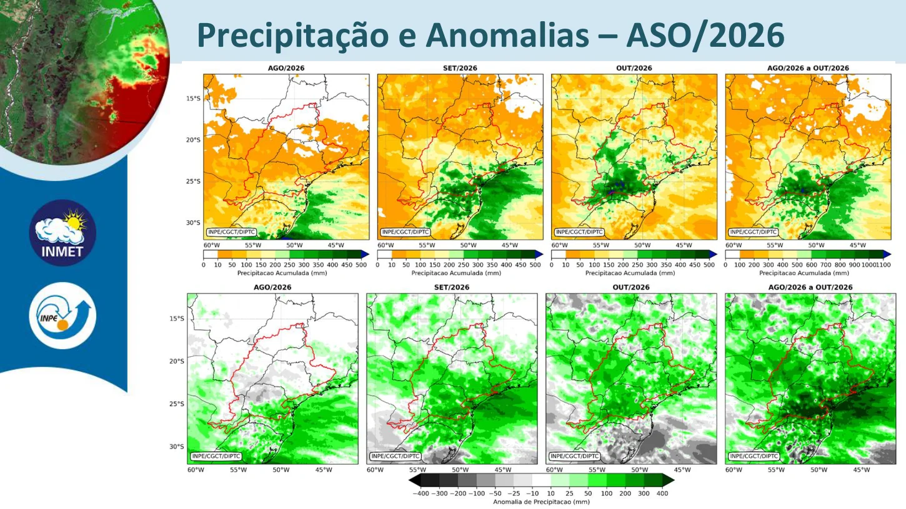
Os painéis superiores mostram os acumulados mensais e trimestral. Os inferiores mostram o desvio em relação à climatologia. Setembro e outubro concentram extensas áreas de anomalia positiva, sobretudo do centro para o sul da RH.INPE/INMET · lâmina 3 · 26/11/2026 · Ampliar figuraNovembro parcial até 24/11
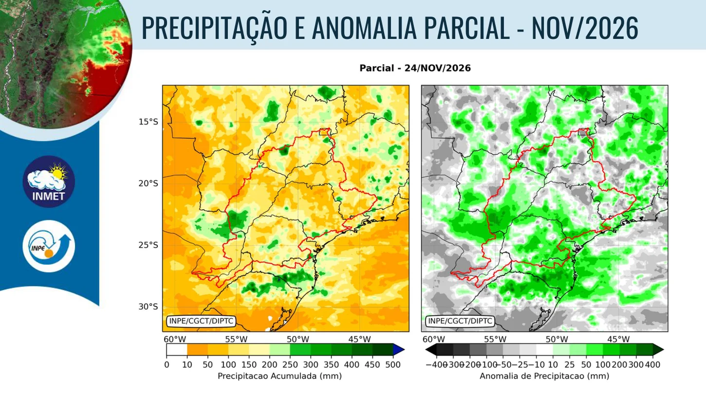
A chuva acumulada e sua anomalia têm distribuições distintas. No centro-sul, áreas contínuas em verde indicam excesso em relação à referência local. Nas cabeceiras aparecem áreas com desvios de sinais diferentes, o que limita o uso de uma média regional para interpretar a estiagem.INPE/INMET · lâmina 4 · 26/11/2026 · Ampliar figuraQuanto a chuva se afastou da média da bacia?
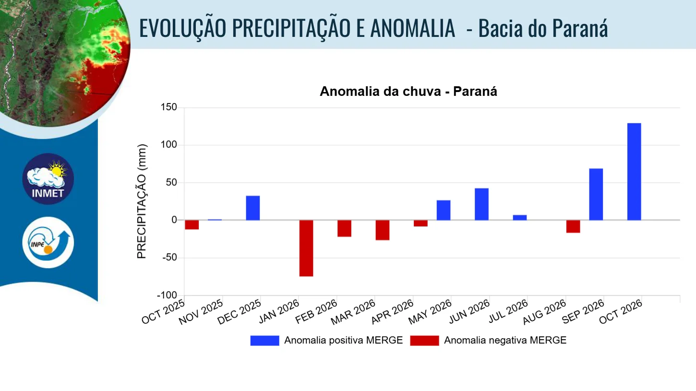
Na série mensal MERGE, janeiro de 2026 teve o maior déficit mostrado. Outubro teve o maior excedente, superior a 100 mm. A série termina em outubro. A comparação com novembro requer o mapa parcial da lâmina anterior.INPE/INMET · lâmina 5 · 26/11/2026 · Ampliar figuraImagem GOES-19 de 26/11
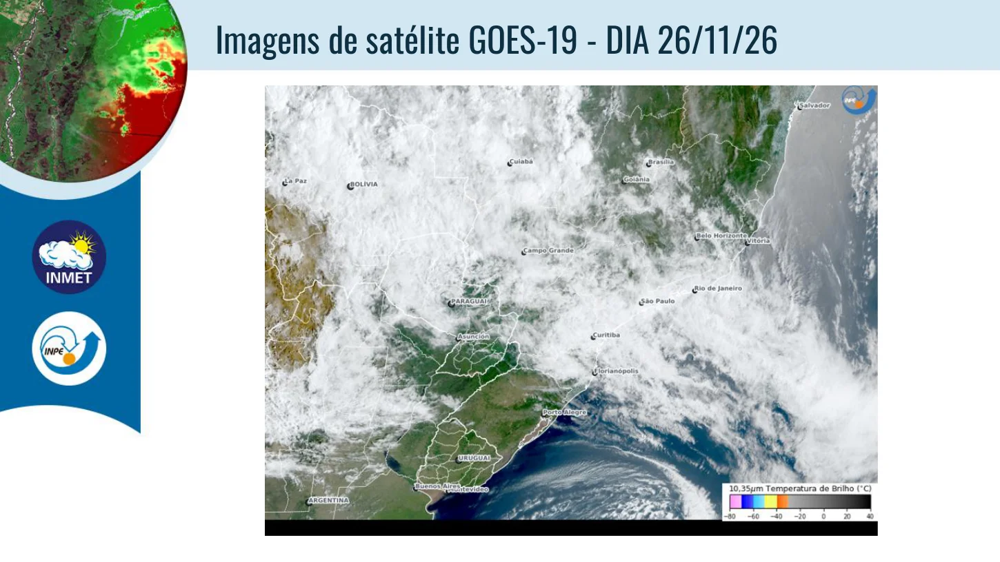
O satélite mostra a distribuição da nebulosidade no dia da reunião, incluindo uma faixa que se prolonga para o Atlântico. A imagem situa a previsão de curto prazo. O volume de chuva em cada sub-bacia deve ser verificado nos acumulados.INPE/INMET · lâmina 6 · 26/11/2026 · Ampliar figuraPrevisão diária para quinta, sexta e sábado
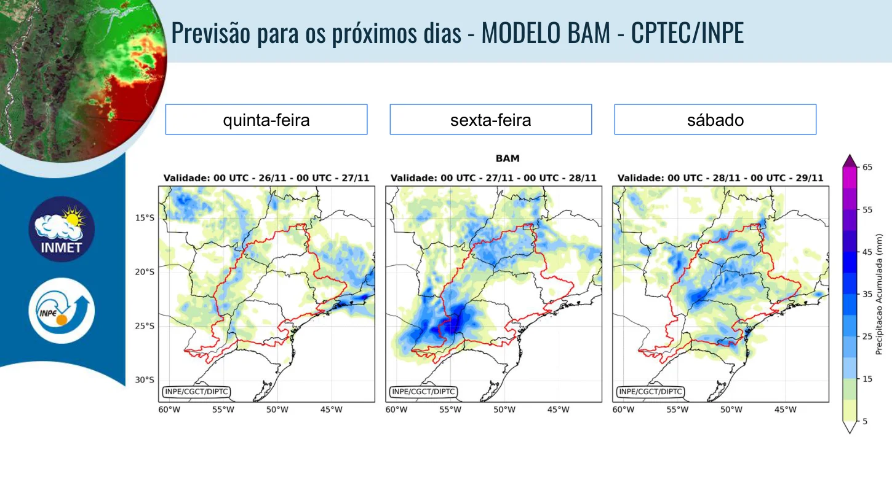
Cada painel do BAM corresponde a 24 horas entre 00 UTC e 00 UTC do dia seguinte. Na sexta-feira (27/11), o núcleo mais intenso aparece no sudoeste. No sábado (28/11), a área prevista de chuva se estende pelo interior. A posição do núcleo interessa às bacias de contribuição a montante dos reservatórios.INPE/INMET · lâmina 8 · 26/11/2026 · Ampliar figuraAnomalia semanal de chuva até 22 de dezembro
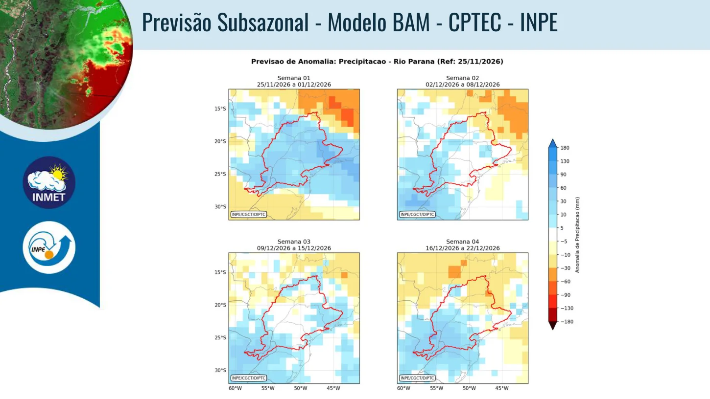
Na semana de 25/11 a 01/12, o BAM indica anomalias positivas em grande parte da RH. De 02 a 08/12, a área de sinal positivo se retrai e o contraste entre sudoeste e nordeste aumenta. Nas duas semanas seguintes, os mapas mantêm diferenças espaciais. A escala representa a anomalia de cada semana.INPE/INMET · lâmina 9 · 26/11/2026 · Ampliar figuraClimatologia de dezembro a fevereiro
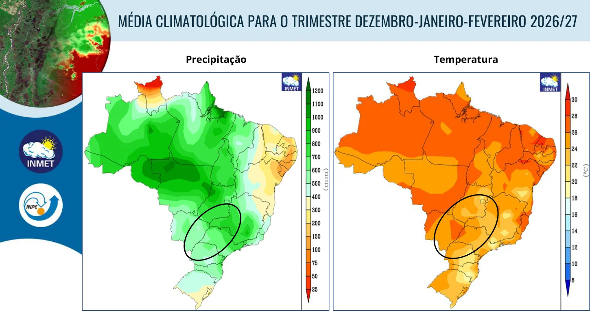
A média histórica de precipitação e temperatura é a referência para interpretar o prognóstico trimestral. Um mesmo desvio de chuva pode representar frações diferentes do volume habitual em cada sub-bacia.INPE/INMET · lâmina 11 · 26/11/2026 · Ampliar figuraPrognóstico por conjunto para dezembro, janeiro e fevereiro
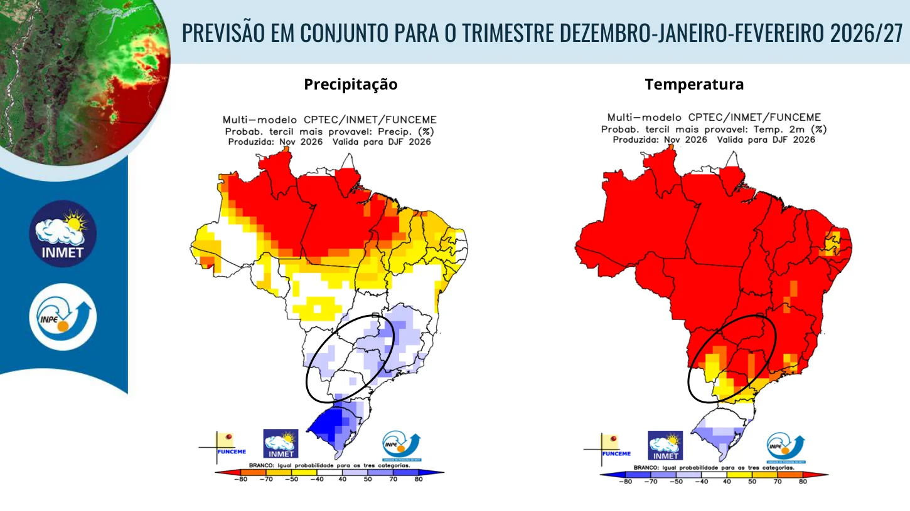
O sinal de chuva acima da média alcança parte da RH, com variações ao longo da bacia. Para temperatura, o sinal quente é mais abrangente. O mapa expressa a probabilidade do tercil mais provável ao longo do trimestre.INPE/INMET · lâmina 12 · 26/11/2026 · Ampliar figuraEvolução mensal de dezembro a março
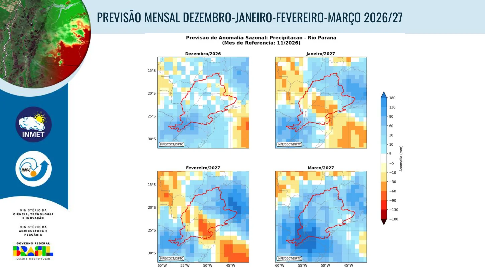
Os quatro mapas mostram que o padrão trimestral pode mudar de posição de um mês para outro. Em janeiro e fevereiro, há contrastes dentro do contorno da RH. Para a operação, convém comparar as revisões semanais antes de associar esse sinal a uma afluência específica.INPE/INMET · lâmina 13 · 26/11/2026 · Ampliar figuraCEMADEN · Chuva acumulada e resposta das vazões
Para o conjunto da bacia, o acumulado apresentado alcança 112% da referência em novembro parcial e 140% desde 1º de outubro. A média regional reúne áreas com respostas diferentes.
O conjunto do modelo hidrológico MHD aponta elevação das vazões naturais em Furnas e Marimbondo no início da previsão de 23/11 a 23/12, com maior dispersão adiante. Para a leitura da estiagem, vale confrontar os acumulados com a persistência do déficit por sub-bacia. A apresentação de novembro não atualiza as classes de seca do índice chuva–vazão apresentadas em outubro.
Fonte: CEMADEN, lâminas 3–5, 7–12.Distribuição das chuvas recentes
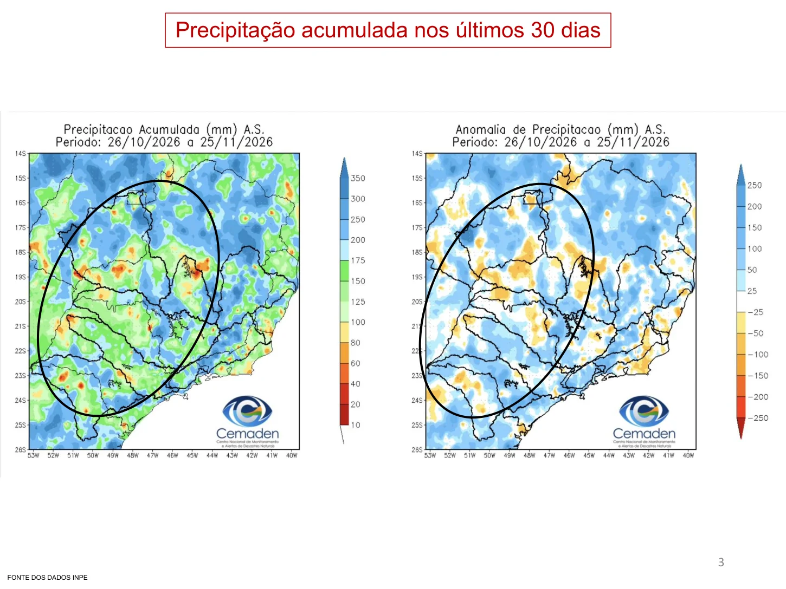
O mapa de acumulados e o mapa de anomalias mostram diferenças dentro do contorno da bacia. O intervalo móvel indicado na figura é distinto do mês civil usado no balanço de novembro.CEMADEN · lâmina 3 · 26/11/2026 · Ampliar figuraPrecipitação na bacia nos últimos 24 meses
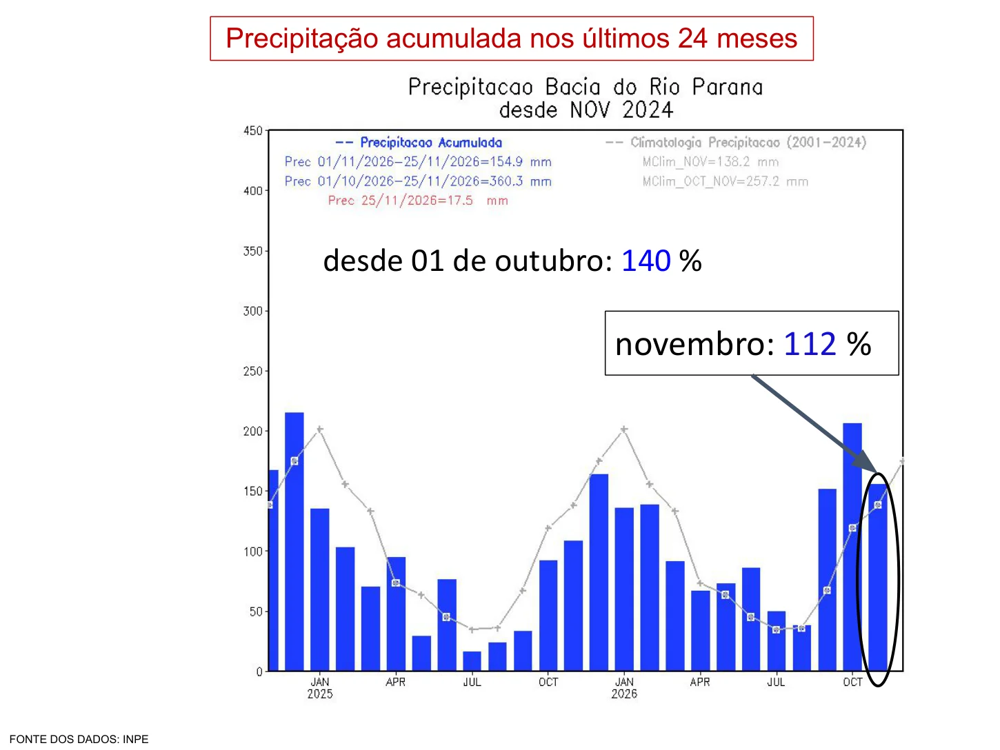
O CEMADEN indica 112% da referência no novembro parcial e 140% desde 1º de outubro. A série permite comparar a recuperação recente com os meses de déficit anteriores.CEMADEN · lâmina 4 · 26/11/2026 · Ampliar figuraPrevisão GEFS para 14 dias na RH Paraná
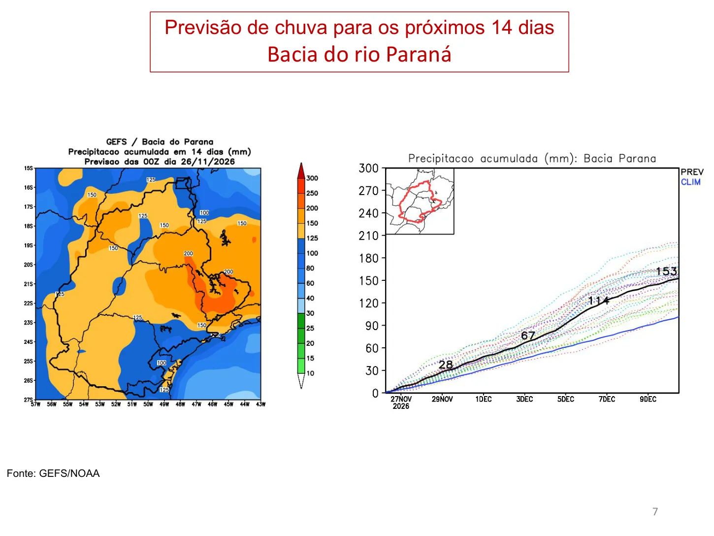
A rodada de 00 UTC de 26/11 projeta 153 mm acumulados na curva de previsão da bacia ao final do horizonte, acima da climatologia do período. As linhas pontilhadas mostram a dispersão crescente entre os membros.CEMADEN · lâmina 7 · 26/11/2026 · Ampliar figuraParanaíba e Grande
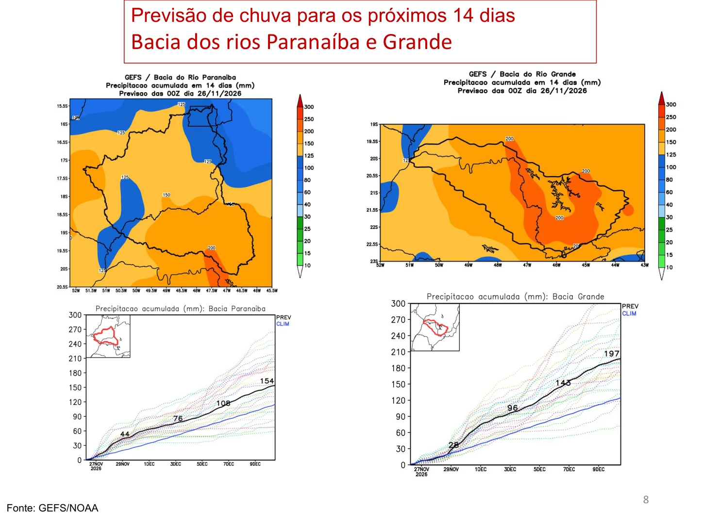
Ao fim de 14 dias, a curva de previsão alcança 154 mm no Paranaíba e 197 mm no Grande. O Grande apresenta o maior acumulado previsto entre os quatro recortes das lâminas 8 e 9.CEMADEN · lâmina 8 · 26/11/2026 · Ampliar figuraTietê e Paranapanema
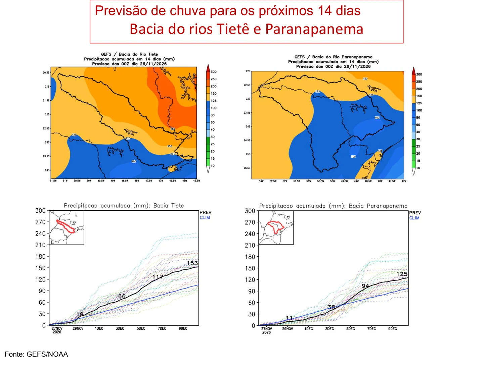
O GEFS projeta 153 mm no Tietê e 125 mm no Paranapanema em 14 dias. O Paranapanema, embora tenha apresentado a maior ENA relativa em novembro parcial, tem o menor acumulado previsto entre esses quatro recortes.CEMADEN · lâmina 9 · 26/11/2026 · Ampliar figuraSemanas 3 e 4 de dezembro
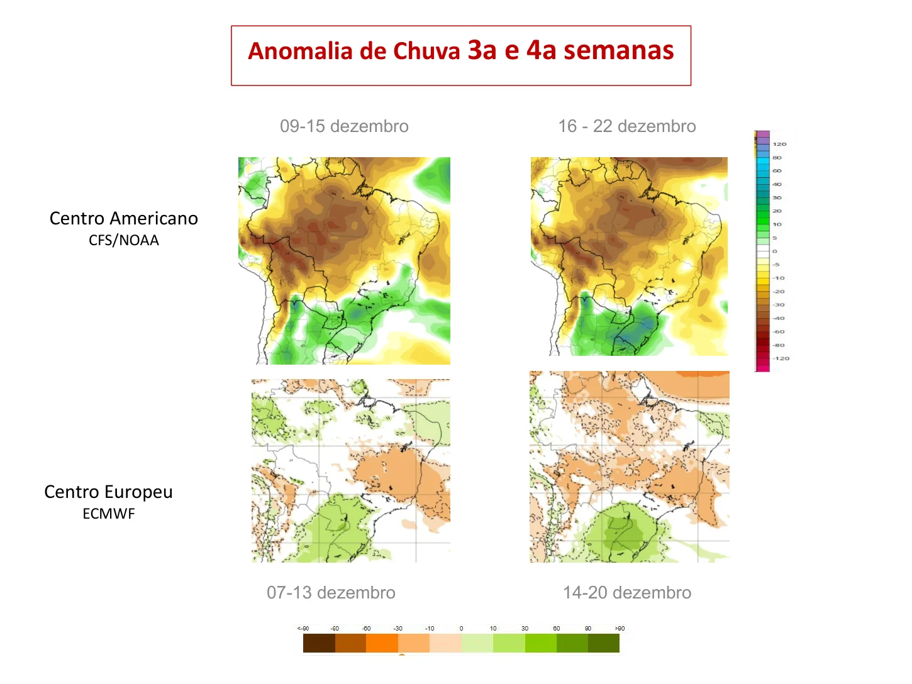
CFS/NOAA e ECMWF mostram diferenças de intensidade e de distribuição. Os períodos também diferem em dois dias entre os modelos. A comparação é adequada para tendência regional e deve preservar as janelas de cada painel.CEMADEN · lâmina 11 · 26/11/2026 · Ampliar figuraVazão natural em Furnas e Marimbondo
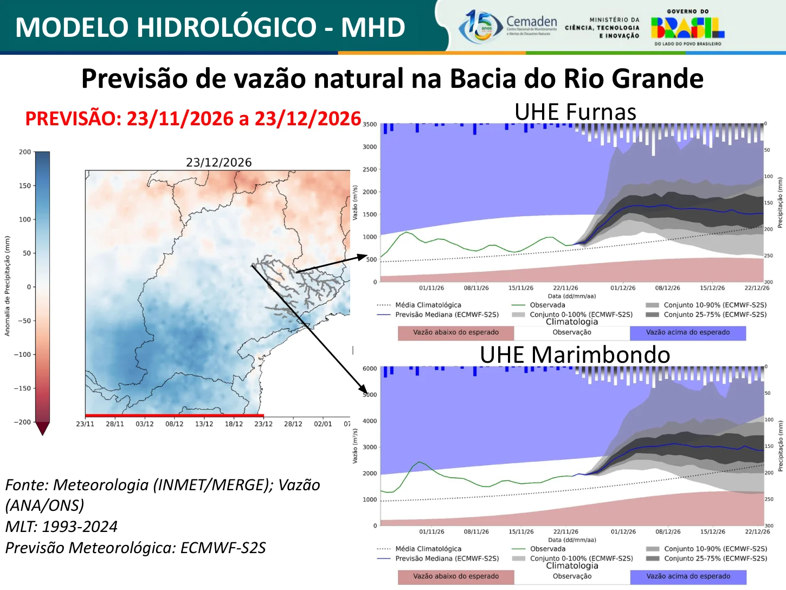
Na previsão MHD de 23/11 a 23/12, as trajetórias sobem no início do horizonte nos dois aproveitamentos. A abertura das faixas cresce adiante. A variável prevista é vazão natural, em m³/s. Para discutir estoque, ela precisa ser associada à operação de cada reservatório.CEMADEN · lâmina 12 · 26/11/2026 · Ampliar figuraONS · Afluências, estoques e operação
Energia natural afluente em % da MLT de cada mês| Recorte | Até 26/10 | Até 24/11 |
|---|
| Paranapanema | 320% | 335% |
| Tietê | 216% | 220% |
| Paraná | 190% | 186% |
| Grande | 129% | 122% |
| Paranaíba | 78% | 100% |
No rio Grande, o volume útil passou de 63% para 70% em Furnas, de 78% para 81% em Mascarenhas de Moraes, de 49% para 59% em Marimbondo e de 29% para 37% em Água Vermelha.
Para Porto Primavera, o ONS informa defluência mínima de 3.900 m³/s e identifica a FSARH 11423-2026, válida até 28/10/2027. Esta era a referência pendente na leitura de outubro. Para Jupiá, a apresentação mantém 3.300 m³/s.
Fontes: ONS, apresentações de 29/10 e 26/11, lâminas 8, 11 e 30.Afluências por sub-bacia
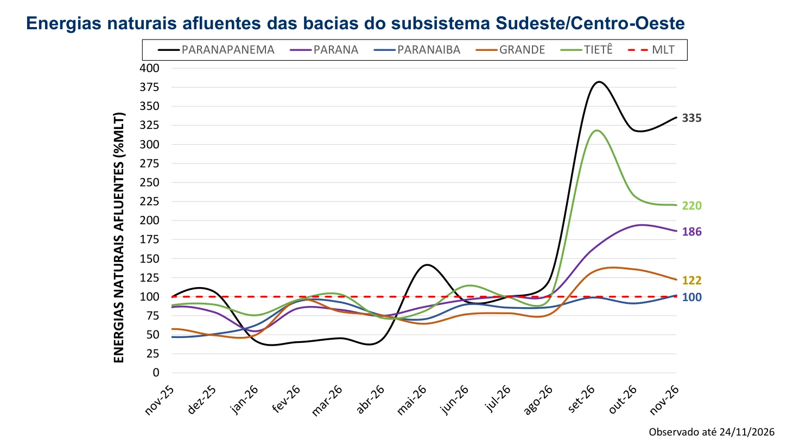
O gráfico mostra energia natural afluente como percentual da MLT mensal. No parcial de novembro até 24/11, Paranapanema (335%) e Tietê (220%) superam a referência em mais de duas vezes. O Paranaíba volta a 100%.ONS · lâmina 8 · 26/11/2026 · Ampliar figuraReservatórios da cascata do Grande
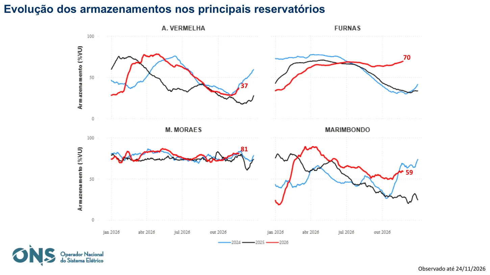
Em 24/11, Furnas tinha 70% de volume útil, Mascarenhas de Moraes 81%, Marimbondo 59% e Água Vermelha 37%. A diferença de 33 pontos percentuais entre Furnas e Água Vermelha evidencia o contraste de estoques na cascata.ONS · lâmina 11 · 26/11/2026 · Ampliar figuraReservatórios do Paranaíba
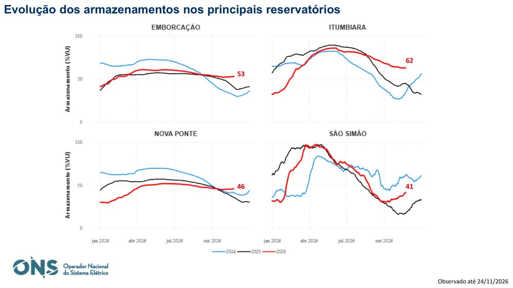
Os valores indicados no painel de armazenamento são 53% em Emborcação, 62% em Itumbiara, 46% em Nova Ponte e 41% em São Simão. Para São Simão, a lâmina individual 23 indica 42%. A diferença de um ponto fica registrada para conferência com o ONS.ONS · lâmina 18 · 26/11/2026 · Ampliar figuraArmazenamento no Tietê
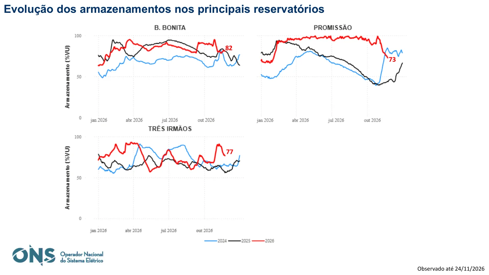
O painel mostra Barra Bonita com 82% de volume útil, Promissão com 73% e Três Irmãos com 77%. As curvas históricas ajudam a distinguir a evolução dos estoques do valor elevado de ENA no Tietê.ONS · lâmina 25 · 26/11/2026 · Ampliar figuraDefluências em Jupiá e Porto Primavera
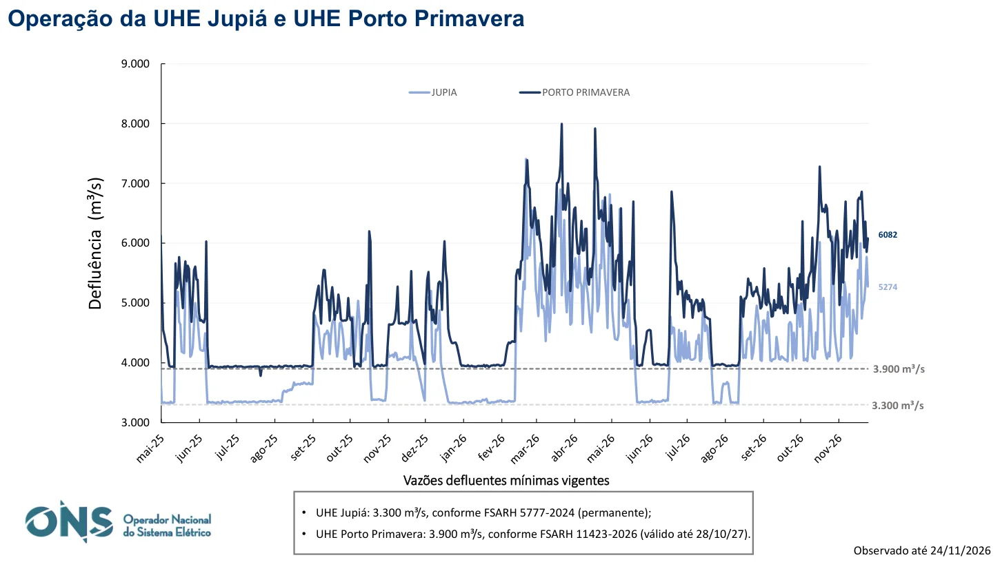
A figura compara as vazões praticadas com as referências mínimas apresentadas pelo ONS. Em Porto Primavera, a referência de 3.900 m³/s está vinculada à FSARH 11423-2026. A nova vigência esclarece a questão que ficou aberta em outubro.ONS · lâmina 30 · 26/11/2026 · Ampliar figuraCenários de vazão natural do ONS
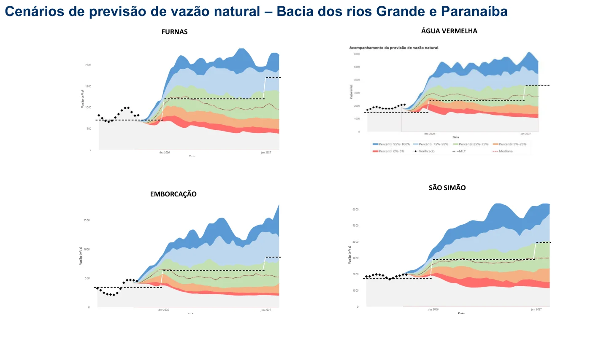
Os painéis de Furnas, Água Vermelha, Emborcação e São Simão abrem faixas de trajetórias distintas. A comparação com o MHD do CEMADEN é direta quanto ao local em Furnas e requer compatibilizar data de inicialização, horizonte e unidade antes de comparar valores.ONS · lâmina 32 · 26/11/2026 · Ampliar figuraPerguntas para o Teams
- Em quais cabeceiras do Paranaíba a melhora das afluências já se sustenta entre os episódios de chuva? Como esses trechos aparecem no Monitor de Secas?
- No Paranapanema e no Tietê, onde a previsão de novos aportes justifica acompanhar mais de perto níveis, defluências e usos a jusante?
- No rio Grande, quanto da elevação prevista para Furnas e Marimbondo pode se traduzir em recomposição adicional do estoque de Água Vermelha?
Consultar a síntese da 10ª reunião · 29/10/2026